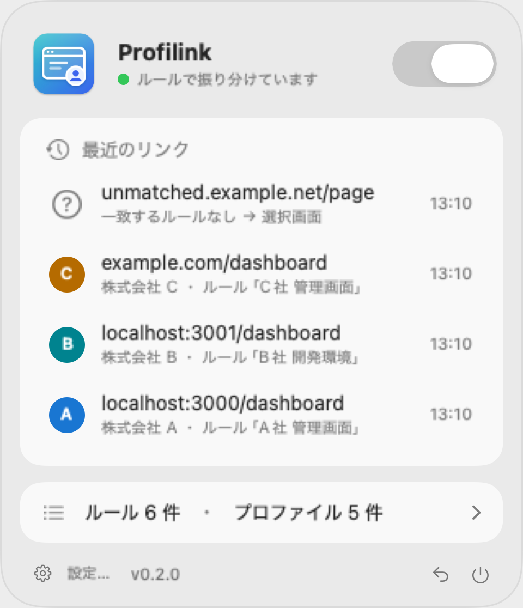
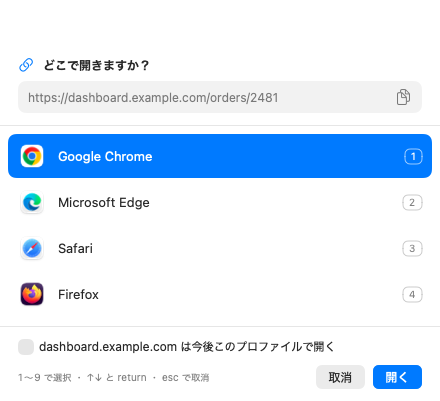

Mac用 リンク振り分けユーティリティ · macOS 13 以降
会社ごと、クライアントごとに Chrome のプロファイルを分けていると、リンクを押すたびに「違うアカウントで開いてログインし直し」が起きます。Profilink は URL を見て、正しいブラウザ・正しいプロファイルで自動で開きます。
Apple Developer ID で署名し、Apple の公証を受けています · 買い切り 980 円

Profilink を Mac の「デフォルトの Web ブラウザ」にしておくだけ。Claude・Slack・メールなどで押したリンクを、URL ごとに振り分けます。
ルールは「ドメイン」「前方一致」「正規表現」「すべて」の 4 種類。localhost:3000 のようにポート番号でも分けられるので、開発中のダッシュボードもプロジェクトごとに振り分けられます。
設定画面の判定テストに URL を入れると、どのルールに当たるかをその場で確かめられます。
どのルールにも当たらないリンクは、選択画面で開き先を選べます。1〜9 で即決、↑↓ と return、esc で取消。
「このドメインは今後このプロファイルで開く」にチェックすれば、それがそのままルールになります。

Chrome・Microsoft Edge・Brave のプロファイルを自動で読み取ります。Safari・Arc・Firefox にも振り分けられます。
設定はすべて画面から。設定ファイルを書く必要はありません。
「Slack と Teams で押したリンクは仕事用、LINE とメッセージは個人用」のように、リンクを押したアプリごとに開き先を決められます。URL のルールと組み合わせることもできます。
Outlook・Teams の「安全なリンク」や、Google・Slack・Facebook などのリダイレクトは、本当の URL を取り出して判定します。会社のメールから開いても、ドメインのルールがそのまま効きます。
⌥ を押しながらリンクを押すと選択画面、⇧ を押しながらだとルールを使わずに決めた場所で開きます。設定を開かずに「今回だけ」ができます。
ルールごとに、シークレット（プライベート）ウィンドウで開くかを選べます。Chrome・Edge・Brave・Firefox で使えます。
届いたリンク、押したアプリ、どこで開いたかを最大 500 件、この Mac にだけ残します。履歴からそのままルールを作れます。
ルールはファイルに書き出して、別の Mac で読み込めます。今のルールに足すか、置き換えるかを選べます。追跡用のパラメータ（utm_ など）を外して開く設定もあります。
複数の会社やクライアントの仕事を、Chrome のプロファイルで分けている人に。
Claude や Slack に出たダッシュボードの URL が、いつも違うアカウントで開いてしまう人に。
localhost:3000 と 3001 で別の会社のログインが要る人に。
この URL だけは Safari で、のような使い分けも自動に。
980 円 買い切り・税込
無料期間で確かめられるため、購入後の返金は原則お受けしていません。購入手続きは販売代行が売主として行います。
まもなく販売を開始します。それまでは無料でお使いいただけます。
| OS | macOS 13 (Ventura) 以降 |
|---|---|
| Mac | Apple silicon · Intel の両方 |
| 振り分け先 | Google Chrome・Microsoft Edge・Brave（プロファイルごと）、Safari・Arc・Firefox |
| 振り分けられるリンク | Chrome の外で押したリンク（Claude・Slack・メール・メモ・ターミナルなど）。Chrome の中で押したリンクは、そのまま Chrome で開きます |
| 言語 | 日本語 · English |
| 署名 | Apple Developer ID で署名・Apple の公証済み |
ご質問・不具合は info@tsubomi.jp へ。